Un fichier masque d’écran peut comporter des ressources, c’est à dire des menus et des barres d’outils. Les ressources sont donc saisies dans un masque précis mais leur utilisation à l’exécution n’est pas limitée à ce masque. Il est tout à fait possible de dessiner un menu dans un fichier masque A et, à l’exécution, d'afficher ce menu dans une page du masque B. L’association d’une ressource à une page se fait dans le programme Diva par des fonctions spécifiques.
A l’exécution, la fenêtre courante peut comporter plusieurs barres d’outils, mais un seul menu.
La saisie des ressources se fait en appelant le choix Editer ressources du menu Ressources (bouton  , raccourci clavier Ctrl+R). L’écran courant est alors remplacé par l’éditeur de ressources qui vous propose d’éditer soit un menu, soit une barre d’outils :
, raccourci clavier Ctrl+R). L’écran courant est alors remplacé par l’éditeur de ressources qui vous propose d’éditer soit un menu, soit une barre d’outils :
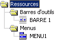
Le choix Revenir à l’édition du masque du menu Ressource (bouton ,raccourci clavier Echap) vous permet de revenir à la saisie du masque.
Les ressources sont stockées dans le fichier source du masque. Il est possible de saisir autant de menus et de barres d’outils que désiré, leur utilisation ultérieure n’étant pas limitée au masque en cours.
Une barre d’outils est une collection de boutons textes ou graphiques.
Action
Un bouton peut générer une des trois actions suivantes :
Génération de caractère (en général une touche de fonction ou de contrôle).
Point d’arrêt.
Traitement Diva.
Case à cocher
Un bouton peut être utilisé comme une case à cocher. Il peut alors se trouver à l'état "actif" ou "inactif".
Exemple :
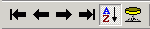
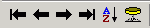
Un groupe de boutons d’une barre d’outils peut se comporter comme un groupe de radio boutons, à savoir qu’un seul des boutons du groupe est "actif" à un instant donné. Les boutons d'un même groupe doivent être consécutifs. La fin du groupe est délimitée par le premier bouton qui n’a pas la propriété "Bouton radio" ou par un séparateur.
Des fonctions Diva spécifiques vous permettent de modifier dynamiquement les boutons d’une barre d’outils (grisage, ajout ou disparition d'un bouton, modification de l'apparence d'un bouton, coche, etc.). Les boutons des barres d’outils ne sont pas affectés par les attributs dynamiques standard.
Par programme, il est possible d’ajouter en une instruction une barre de boutons à une barre existante. La barre de surcharge peut se trouver dans un autre fichier masques que celui contenant la barre d’outils surchargée. L’opération de surcharge peut s’effectuer plusieurs fois.
Le fonctionnement d’un menu est comparable en de nombreux points au fonctionnement d’une barre d’outils.
Remarque : les menus peuvent être classiques ou contextuels (popup menu ou menu surgissant). Pour le développeur, la seule différence entre ces deux types de menu est que le menu contextuel comporte un unique choix principal.
Action
Un choix d’un menu peut générer une des trois actions suivantes :
Génération de caractère (en général une touche de fonction ou de contrôle).
Point d’arrêt.
Traitement Diva.
Case à cocher
Un choix de menu peut être utilisé comme une case à cocher. Il peut alors se trouver à l'état "actif" ou "inactif".
Exemple :
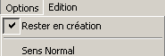
Boutons radio
Un groupe de choix d’un menu peut se comporter comme un groupe de radio boutons, à savoir qu’un seul des choix du groupe est actif à un instant donné. Les choix d'un même groupe doivent être consécutifs. La fin du groupe est délimitée par le premier choix qui n’a pas la propriété "Bouton radio" ou par un séparateur.
Exemple :
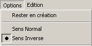
Des fonctions Diva spécifiques vous permettent de modifier dynamiquement les choix d’un menu (grisage, ajout ou disparition d'un choix, modification de l'apparence d'un choix, coche, etc.). Les choix des menus ne sont pas affectés par les attributs dynamiques standard.
Par programme, il est possible d’ajouter en une instruction un menu de surcharge à un menu existant. La fusion permet d'ajouter aussi bien des choix principaux que des sous-choix aux choix existants.
Le menu de surcharge peut se trouver dans un autre fichier masques que celui contenant le menu surchargé. L’opération de surcharge peut s’effectuer plusieurs fois.
Exemple :
|
Voici le menu d’origine, avec deux choix principaux et un sous menu pour Options complémentaires |
|
|
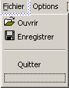 |
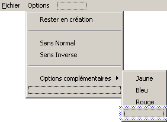 |
|
Nous voulons ajouter un nouveau choix principal Edition et ajouter une couleur dans les Options complémentaires. Le menu de surcharge est saisi comme suit : |
|
|
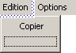 |
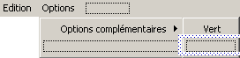 |
|
Et voici le résultat : |
|
|
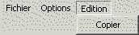 |
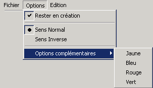 |